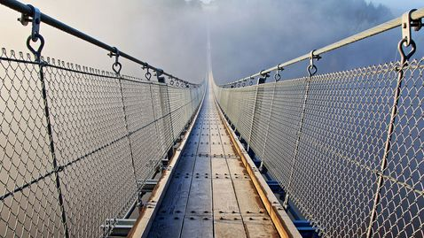
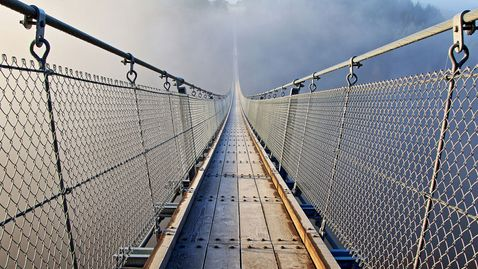
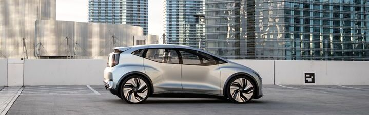
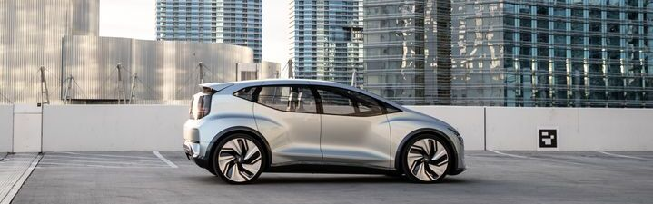
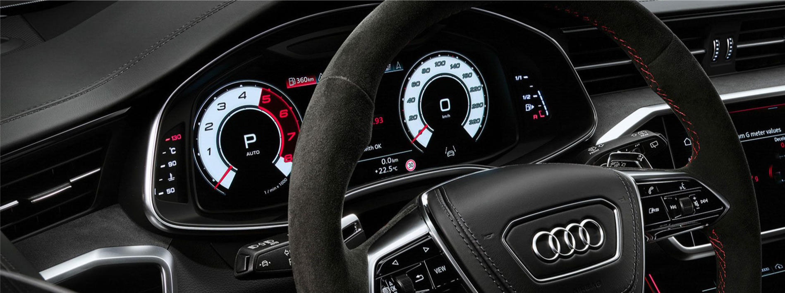
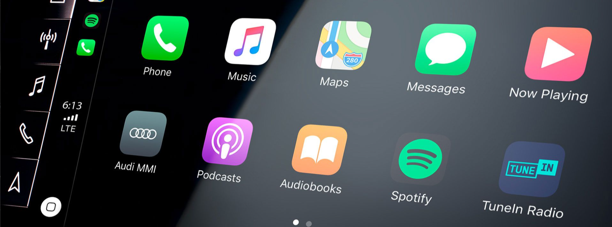
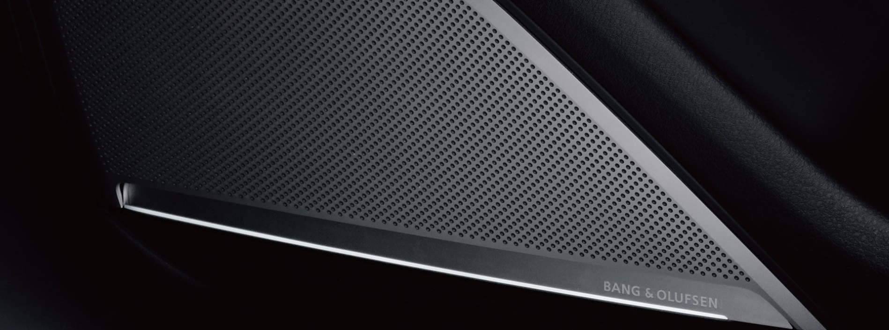
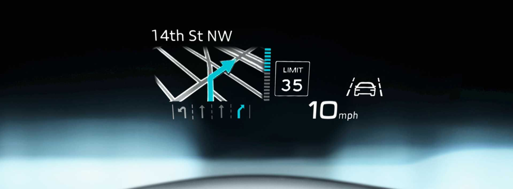
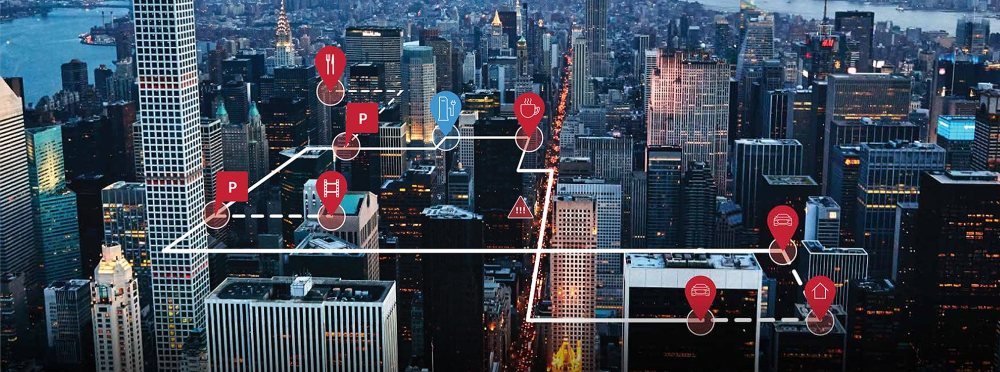

Компания
AUDI AG олицетворяет спортивные автомобили, высокое качество сборки и прогрессивный дизайн - "Vorsprung durch Technik”. Audi Group входит в число ведущих мировых производителей автомобилей премиум-класса. Чтобы сыграть важную роль в формировании трансформации по мере того, как мы вступаем в новую эру мобильности, Компания шаг за шагом реализует свою стратегию.
 

 

Информация о структуре AUDI AG
Годовой отчет и отчет об устойчивом развитии Отчет Audi за 2023 год Добро пожаловать на отчет Audi за 2023 год! Объединенный годовой отчет Audi и отчет об устойчивом развитии объединяют темы стратегии, финансов, а также окружающей среды, социальной сферы и управления (ESG).
Будьте очарованы.
Благодаря смелому дизайну и напористому двигателю V8 с двойным
турбонаддувом Audi RS 7 performance никогда не перестает восхищать.
Дизайн
Audi создана специально для вас. Подберите свой Audi RS 7 performance индивидуально.
Может взиматься дополнительная плата. Варианты могут отличаться.
Дизайн RS
Вдохновленный гоночным наследием Audi Sport, Audi RS 7 performance отличается такими элементами дизайна, как мощные широкие крылья и увеличенные передние воздухозаборники, которые подают холодный воздух в интеркулер. Новинка 2024 года - RS 7 performance с матово-серой отделкой окон, зеркал и нижних аэродинамических элементов.Дизайн–пакет RS - Красный плюс
Доступный пакет RS Design – Red plus включает в себя такие элементы интерьера, как кожа и Dinamica, коврики RS с контрастной строчкой, вставки Dinamica, рулевое колесо из алькантары и черные ремни безопасности с красной окантовкой.Дизайн–пакет RS - синий плюс
Доступный дизайн RS – комплектация Blue plus включает в себя такие функции, как рулевое колесо и переключатель передач из алькантары с синей прострочкой, вставки из карбоновой саржи с синим акцентом и все синие ремни безопасности.Карбоновая матовая оптика
Комплект карбоново-матовой оптики включает карбоновые корпуса зеркал и бамперов, 22-дюймовые диски с 5-Ю спицами в матово-черном исполнении и детали аэродинамической отделки с черной окантовкой окон и эмблемой.Восторг от колес
Audi RS 7 performance оснащен стандартными 21-дюймовыми или дополнительными 22-дюймовыми дисками с 5-Ю спицами в четырех вариантах отделки, оснащенными шинами 285/30 R22 performance.Производительность
Tiptronic
Технические характеристики
RS 7 performance RS 7 performance quattro tiptronic
| Двигатель | |
|---|---|
| Тип двигателя |
V8 / 32V / Непосредственный впрыск / С турбонаддувом / Система
Audi Valvelift |
| Данные о производительности | |
| Объем двигателя | 3996 см3 |
| Максимальная мощность | 621 л. с. |
| Максимальная скорость | 250 км/ч |
| Разгон 0-100 км/ч | 3,4 секунды |
| Максимальный крутящий момент | 627 фунт-фут |
| Трансмиссия | |
| Трансмиссия |
8-ступенчатый tiptronic - доступный задний дифференциал Sport
quattro |
| Подвеска | |
| Спереди | Адаптивная пневмоподвеска с настройкой RS - Дополнительная подвеска Dynamic ride control |
| Сзади |
Адаптивная пневмоподвеска с настройкой RS - Дополнительная
подвеска Dynamic ride control |
| Тормозная система | |
| Тормозная система |
10-поршневые передние и однопоршневые задние суппорты -
Дополнительные керамические тормоза с красными или синими
суппортами |
| Рулевое управление | |
| Рулевое управление |
Электромеханическое рулевое управление с чувствительным к
скорости усилителем - Доступно динамическое рулевое управление
и управление на все колеса |
| Объем | |
| Топливный бак (прибл.) | 73 л |
| Расход топлива | |
| Топливо | Премиум |
| Расход топлива - город | 16,9 л /100 км |
| Расход топлива - шоссе | 11,0 л /100 км |
| Расход топлива - комбинированный | 14,2 л/100 км |
Технология

Audi virtual cockpit plus. Являясь настраиваемой цифровой панелью приборов, Audi virtual cockpit plus отображает ключевую информацию прямо в поле вашего зрения на потрясающем 12,3-дюймовом HD-дисплее. Включает в себя новый эксклюзивный дизайн белого фона для RS.
Легко, как со смартфона. С помощью беспроводных Apple CarPlay и Android Auto получите доступ к своему телефону, чтобы пользоваться любимыми приложениями, музыкой, картами, сообщениями и многим другим.
Bang & Olufsen. Доступная усовершенствованная 3D-звуковая система Bang & Olufsen оснащена 19 стратегически расположенными динамиками мощностью 1820 Вт и усовершенствованным звуковым процессором, предназначенным для направления звука к слушателю и воспроизведения ощущения живого выступления.
Головной дисплей. Стандартный головной дисплей Audi RS 7 performance отображает всю необходимую информацию, которая безопасно и удобно проецируется в поле вашего зрения.
Audi connect. Воспользуйтесь полностью интегрированными инструментами помощи, включая интеллектуальную навигацию, удаленное обслуживание автомобиля, поиск автомобиля и помощь на дороге. Функции безопасности, включая экстренный вызов и локатор угнанного автомобиля, обеспечивают спокойствие.